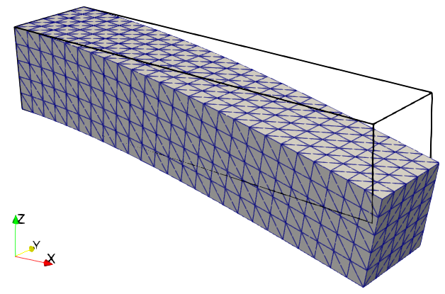

Linear elasticity#
Problem definition#
In this example, we use a cantilever beam example to demonstrate how to solve linear elasticity problems with JAX-FEM, beginning with its mathematical formulation. The governing equation for linear elasticity of a body \(\Omega\) can be written as
The weak form gives
We consider a vertical bending load applied to the right side of the beam (\(\boldsymbol{t}=[0, 0, -100]\)) while fixing the left side (\(\boldsymbol{u}_D=[0,0,0]\)), and ignore body force (\(\boldsymbol{b}=[0,0,0]\)). The constitutive relationship is given by
Implementation#
We follow the similar three steps to solve the above boundary value problem (BVP). Again, we first import some necessary modules.
[ ]:
# Import some useful modules.
import jax.numpy as np
import numpy as onp
import os
import pypardiso
import scipy
# Import JAX-FEM specific modules.
from jax_fem.problem import Problem
from jax_fem.solver import solver
from jax_fem.utils import save_sol
from jax_fem.generate_mesh import box_mesh_gmsh, get_meshio_cell_type, Mesh
from jax_fem import logger
import logging
logger.setLevel(logging.DEBUG)
Weak Form#
As mentioned in the poisson equation example, the weak form of the above BVP is defined in a subclass based on the Problem base class, where the Laplace Kernel and Surface Kernel are used.
[ ]:
# Material properties.
E = 70e3
nu = 0.3
mu = E/(2.*(1.+nu))
lmbda = E*nu/((1+nu)*(1-2*nu))
# Weak forms.
class LinearElasticity(Problem):
# The function 'get_tensor_map' overrides base class method. Generally, JAX-FEM
# solves -div(f(u_grad)) = b. Here, we have f(u_grad) = sigma.
def get_tensor_map(self):
def stress(u_grad):
epsilon = 0.5 * (u_grad + u_grad.T)
sigma = lmbda * np.trace(epsilon) * np.eye(self.dim) + 2*mu*epsilon
return sigma
return stress
def get_surface_maps(self):
def surface_map(u, x):
return np.array([0., 0., 100.])
return [surface_map]
Mesh#
We now define the mesh, starting by specifying the second-order tetrahedral element type TET10 and determining its corresponding cell identifier via get_meshio_cell_type. After configuring a script-relative data directory, we call box_mesh_gmsh (which interfaces with Gmsh) to generate the mesh based on prescribed rectangular domain dimensions and resolution parameters. The resulting mesh’s nodal coordinates and element connectivities are then used to instantiate the solver-ready
Mesh object.
[ ]:
# Specify mesh-related information (second-order tetrahedron element).
ele_type = 'TET10'
cell_type = get_meshio_cell_type(ele_type)
data_dir = os.path.join(os.path.dirname(__file__), 'data')
Lx, Ly, Lz = 10., 2., 2.
Nx, Ny, Nz = 25, 5, 5
meshio_mesh = box_mesh_gmsh(Nx=Nx,
Ny=Ny,
Nz=Nz,
Lx=Lx,
Ly=Ly,
Lz=Lz,
data_dir=data_dir,
ele_type=ele_type)
mesh = Mesh(meshio_mesh.points, meshio_mesh.cells_dict[cell_type])
### Boundary conditions
This example implements two boundary condition types. For the Dirichlet boundary condition, we specify the geometric locations, directional components, and constrained values. The Neumann boundary condition requires only location specification, as the surface tractions are inherently defined within the Problem subclass via the get_surface_maps function.
[ ]:
# Define boundary locations.
def left(point):
return np.isclose(point[0], 0., atol=1e-5)
def right(point):
return np.isclose(point[0], Lx, atol=1e-5)
# Define value function.
def zero_dirichlet_val(point):
return 0.
# Define Dirichlet boundary values.
# This means on the 'left' side, we apply the function 'zero_dirichlet_val'
# to all components of the displacement variable u.
dirichlet_bc_info = [[left] * 3, [0, 1, 2], [zero_dirichlet_val] * 3]
# Define Neumann boundary locations.
# This means on the 'right' side, we will perform the surface integral to get
# the tractions with the function 'get_surface_maps' defined in the class 'LinearElasticity'.
location_fns = [right]
Problem#
Having completed the weak form formulation, mesh generation, and boundary condition specification, we now create a instance of the defined BVP:
[ ]:
# Create an instance of the problem.
problem = LinearElasticity(mesh,
vec=3,
dim=3,
ele_type=ele_type,
dirichlet_bc_info=dirichlet_bc_info,
location_fns=location_fns)
Solver#
Here we choose to solve the problem via the customized Pardiso solver. We first define a solution function pardiso_solver that accepts the coefficient matrix \(\boldsymbol{A}\), right-hand side \(\boldsymbol{b}\), initial value \(\boldsymbol{x}_0\), and solver options.
[ ]:
def pardiso_solver(A, b, x0, solver_options):
"""
Solves Ax=b with x0 being the initial guess.
A: PETSc sparse matrix
b: JaxArray
x0: JaxArray (forward problem) or None (adjoint problem)
solver_options: anything the user defines, at least satisfying solver_options['custom_solver'] = pardiso_solver
"""
logger.debug(f"Pardiso Solver - Solving linear system")
# If you need to convert PETSc to scipy
indptr, indices, data = A.getValuesCSR()
A_sp_scipy = scipy.sparse.csr_array((data, indices, indptr), shape=A.getSize())
x = pypardiso.spsolve(A_sp_scipy, onp.array(b))
return x
Then we can pass the customized solution function into the solver_options and solve the problem:
[ ]:
# Solve the defined problem.
sol_list = solver(problem, solver_options={'custom_solver': pardiso_solver})
Postprocessing#
Finally, we can compute the cell-level average von Mises stresses from the solution:
[ ]:
# Postprocess for stress evaluations
# (num_cells, num_quads, vec, dim)
u_grad = problem.fes[0].sol_to_grad(sol_list[0])
epsilon = 0.5 * (u_grad + u_grad.transpose(0,1,3,2))
# (num_cells, bnum_quads, 1, 1) * (num_cells, num_quads, vec, dim)
# -> (num_cells, num_quads, vec, dim)
sigma = lmbda * np.trace(epsilon, axis1=2, axis2=3)[:,:,None,None] * np.eye(problem.dim) + 2*mu*epsilon
# (num_cells, num_quads)
cells_JxW = problem.JxW[:,0,:]
# (num_cells, num_quads, vec, dim) * (num_cells, num_quads, 1, 1) ->
# (num_cells, vec, dim) / (num_cells, 1, 1)
# --> (num_cells, vec, dim)
sigma_average = np.sum(sigma * cells_JxW[:,:,None,None], axis=1) / np.sum(cells_JxW, axis=1)[:,None,None]
# Von Mises stress
# (num_cells, dim, dim)
s_dev = (sigma_average - 1/problem.dim * np.trace(sigma_average, axis1=1, axis2=2)[:,None,None]
* np.eye(problem.dim)[None,:,:])
# (num_cells,)
vm_stress = np.sqrt(3./2.*np.sum(s_dev*s_dev, axis=(1,2)))
and store the results in VTK format for visualization:
[ ]:
# Store the solution to local file.
vtk_path = os.path.join(data_dir, 'vtk/u.vtu')
save_sol(problem.fes[0], sol_list[0], vtk_path, cell_infos=[('vm_stress', vm_stress)])

Solution to the linear elasticity problem.
Please refer to this link to download the source file.